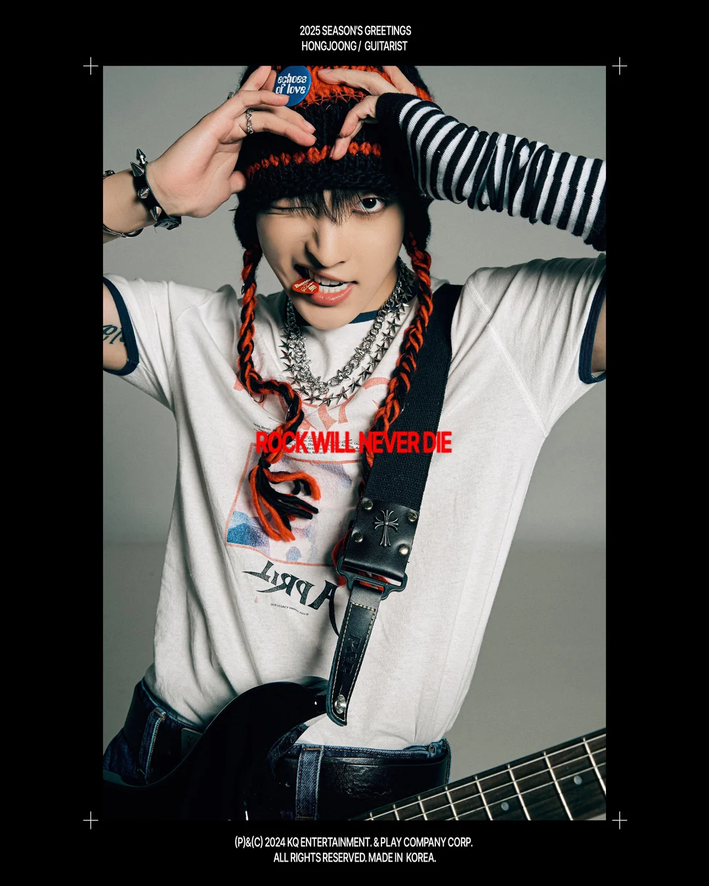
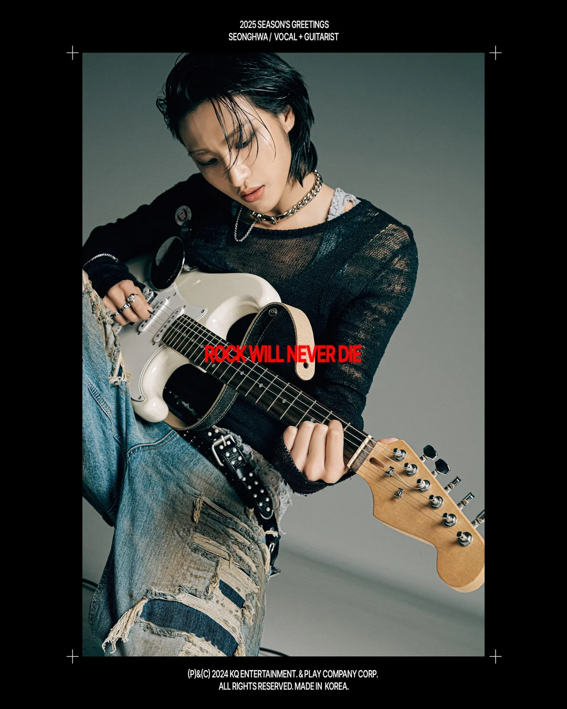
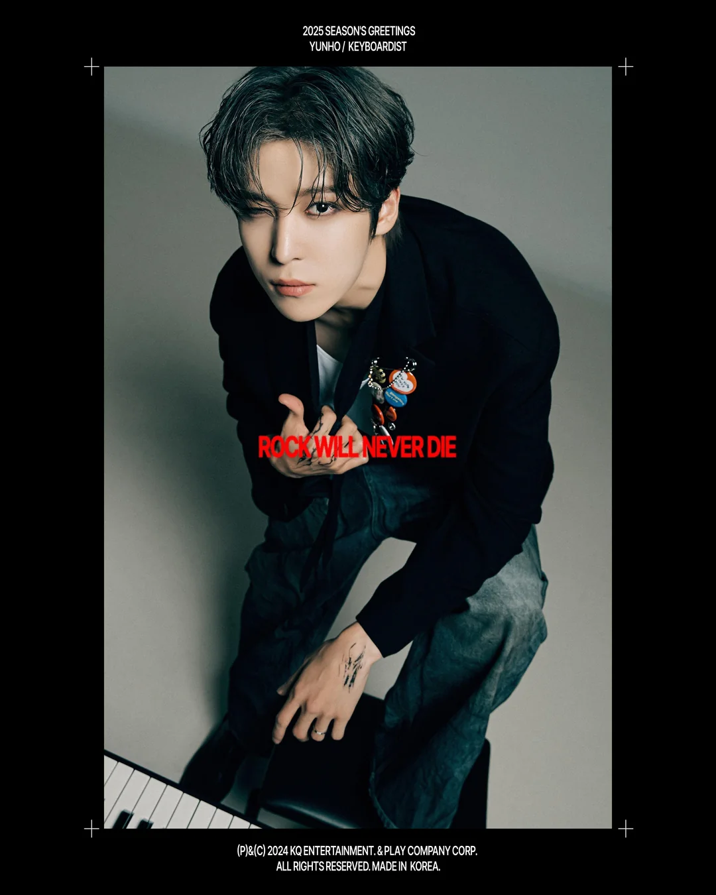
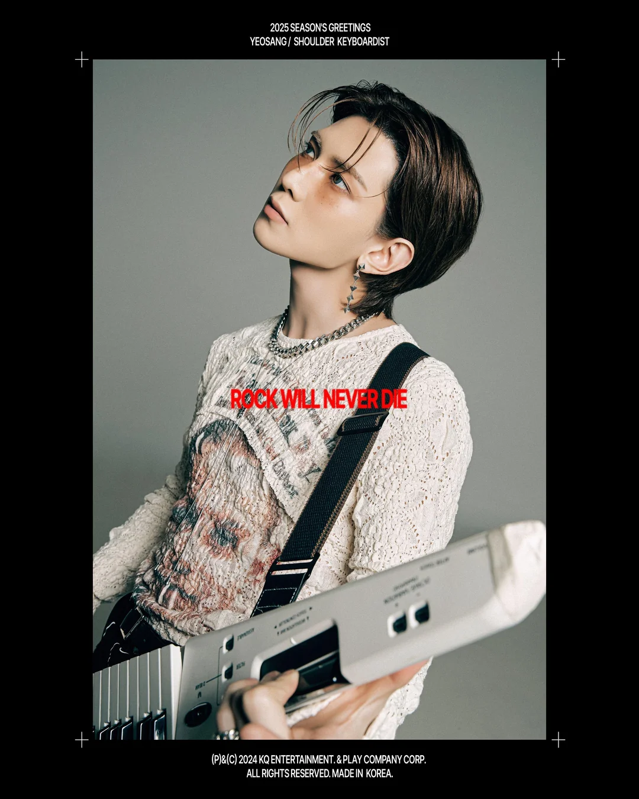
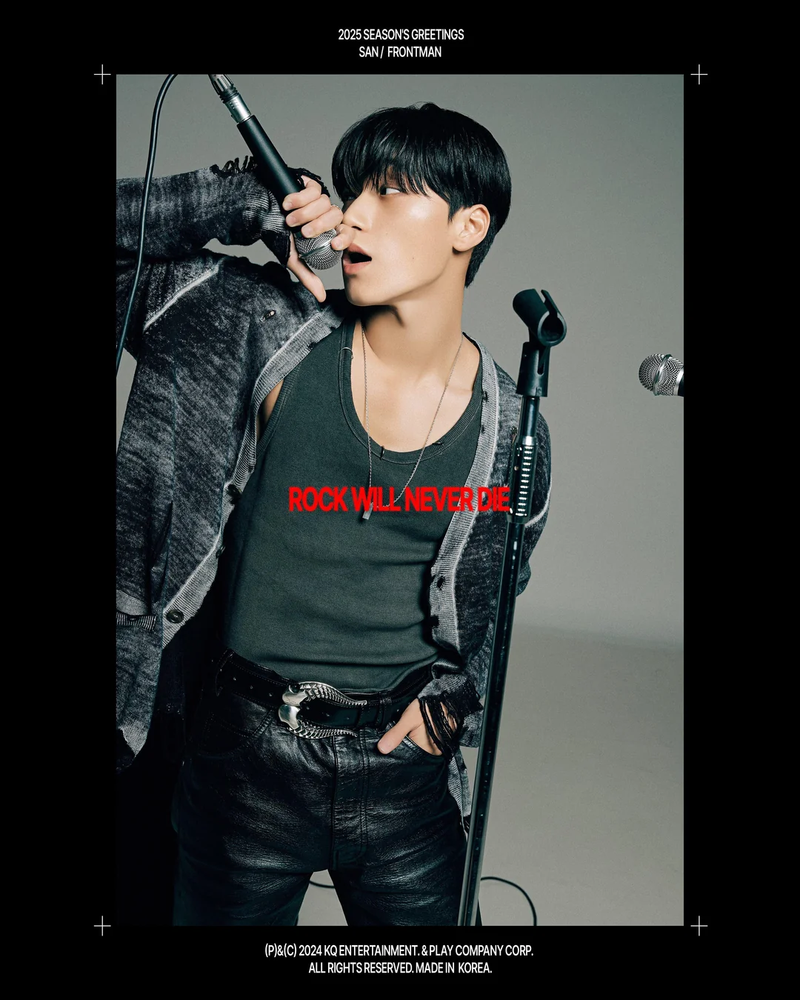
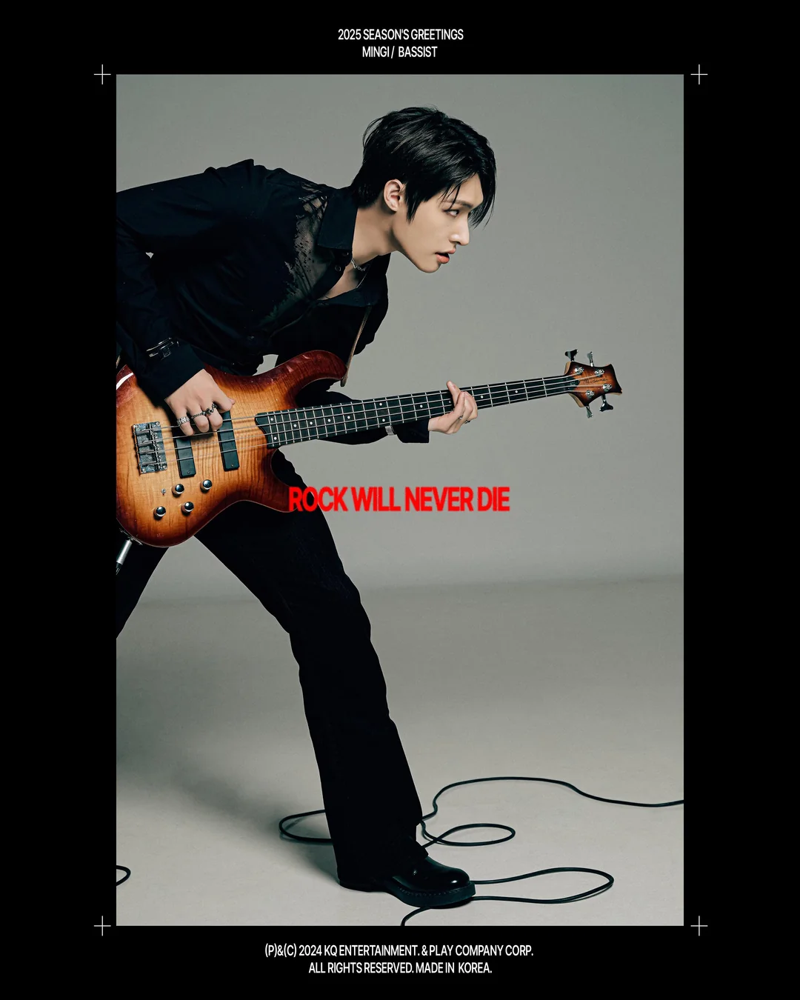
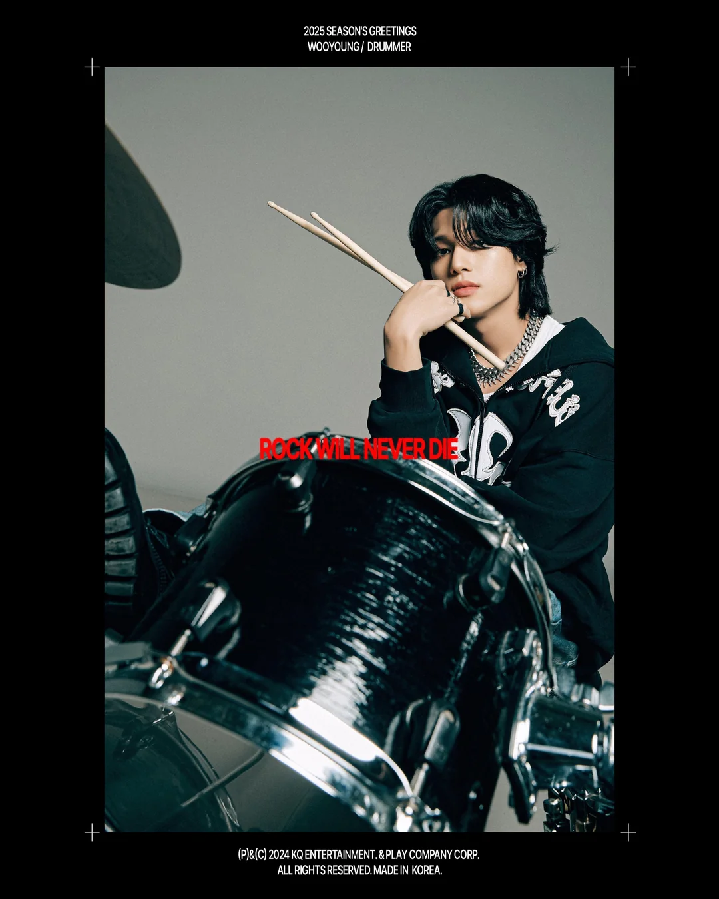
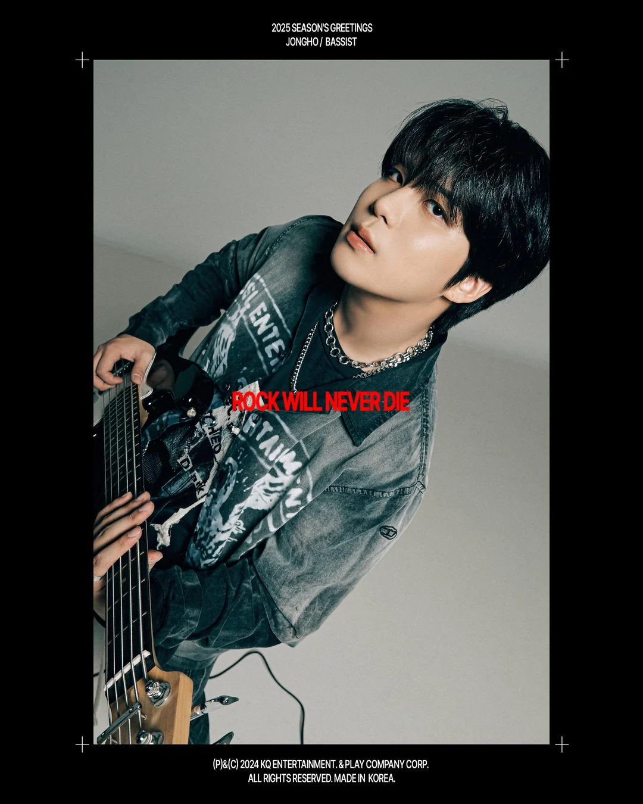

playlists








- game osts
- jpop faves
- kpop faves
- pftm
- orv
- in a world where magic exists
- opm songs for the yearning soul
- playlist of a caratiny taking up compsci
- male sirens
- cottage four
- calm down
- sad hours
- detach
- motivation
- ode to me
- childhood friends au
- main character moment
- daiya playlist
- lofi
- max volume!
- exams.
- sing along
- home.
- alone on the rooftop at 2am.